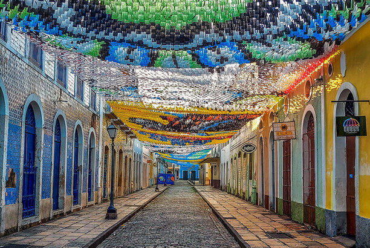
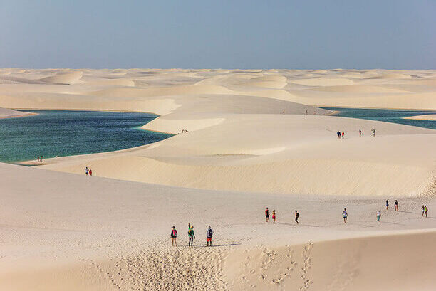
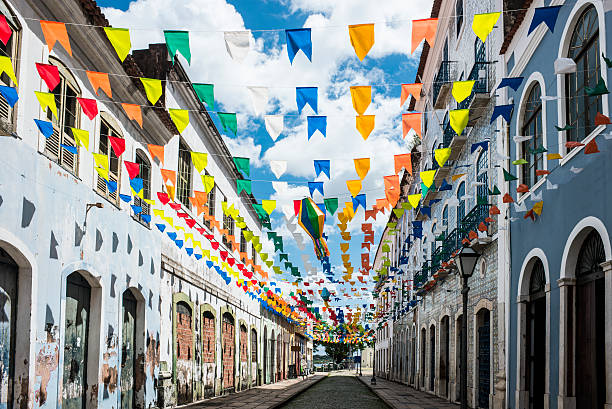
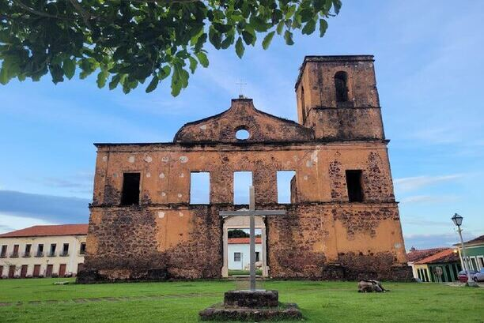
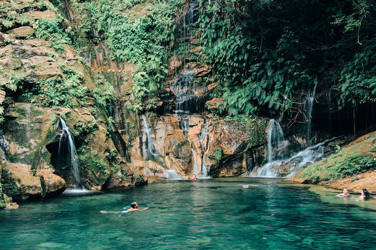
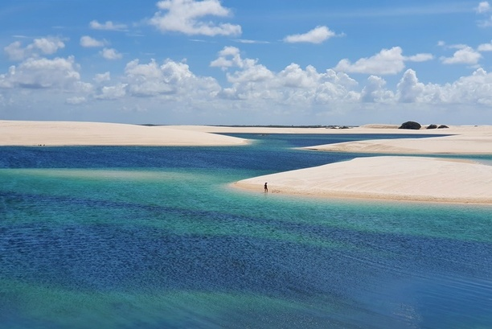

SOBRE O MARANHÃO
O Maranhão é um estado localizado na região Nordeste do Brasil. É o segundo maior estado em área territorial do país, sendo superado apenas pelo estado do Amazonas. Sua capital é São Luís, que também é a única cidade brasileira fundada por franceses e a única capital brasileira situada em uma ilha.
O estado do Maranhão possui uma rica história e cultura, influenciada por diversos povos e etnias. Durante o período colonial, foi palco de disputas entre franceses, portugueses e holandeses. A cultura maranhense é marcada pela forte presença africana, com destaque para o Bumba meu boi, uma manifestação popular que mistura dança, música e teatro.
A economia do Maranhão é baseada em diversos setores. O estado possui um dos maiores portos do Brasil, o Porto do Itaqui, que é um importante ponto de escoamento de grãos, minérios e combustíveis. Além disso, a agricultura, a pecuária e a indústria extrativista são atividades inspiradoras para a região.
A diversidade natural também é uma característica marcante do Maranhão. O estado abriga o Parque Nacional dos Lençóis Maranhenses, uma área de dunas e lagoas que forma um dos mais belos cenários naturais do país. Outro destaque é a região dos Pequenos Lençóis, a Chapada das Mesas e o Delta do Parnaíba, que faz divisa com o estado do Piauí.
Em relação à gastronomia, a culinária maranhense é bastante diversificada e saborosa. Pratos como o arroz de cuxá, a torta de camarão, o peixe na brasa e o famoso reggae são elementos importantes da cultura e da identidade do estado.
Essas são apenas algumas informações gerais sobre o Maranhão. O estado possui uma riqueza cultural e natural ainda mais vasta, o que faz dele um destino interessante para quem deseja conhecer e explorar as belezas e peculiaridades da região.

5 PRINCIPAIS PONTOS TURISTICOS DO MARANHÃO
1. LENÇÓIS MARANHENSES
Os Lençóis Maranhenses são uma paisagem única e deslumbrante. Trata-se de uma extensa área de dunas, lagoas e mangues, que formam um cenário surreal e encantador. As dunas dos Lençóis Maranhenses são conhecidas por sua imensidão e beleza. Estendem-se por milhas, criando uma paisagem ondulante de areias brancas. Durante a temporada de chuvas, as depressões entre as dunas são inundadas com água, formando lagoas de água doce com tons de azul intenso. A formação das lagoas é um fenômeno único. Durante a estação chuvosa, as chuvas enchem as depressões entre as dunas, criando verdadeiros oásis de água cristalina. As lagoas variam em tamanho, desde pequenas poças grandes lagoas que chegam a vários metros de profundidade.
Explorar os Lençóis Maranhenses é uma experiência incrível. Os visitantes podem caminhar pelas dunas, fazer passeios de jipe ou quadriciclo e mergulhar nas refrescantes lagoas. A cidade de Barreirinhas é o ponto de acesso principal aos Lençóis Maranhenses. A partir daí, os turistas podem contratar passeios e guias locais para explorar a região. Outras cidades próximas, como Santo Amaro e Atins, também oferecem acesso aos Lençóis Maranhenses. A melhor época para visitar os Lençóis Maranhenses é durante os meses de maio a setembro, quando as lagoas estão cheias e o cenário é mais espetacular. Durante a estação seca, as lagoas tendem a secar e as dunas assumem uma aparência mais árida.
Os Lençóis Maranhenses são um destino imperdível para os amantes da natureza e para aqueles que buscam paisagens deslumbrantes. É um lugar único no mundo, onde a combinação de dunas brancas e lagoas azuis cria um cenário mágico e inesquecível.

2. CENTRO HISTÓRICO DE SÃO LUÍS
O Centro Histórico de São Luís é um local de grande importância cultural e histórica localizado na capital do estado do Maranhão, no Brasil. Reconhecido como Patrimônio Mundial pela UNESCO, o centro histórico é conhecido por sua arquitetura colonial, ruas de pedra e azulejos portugueses.
O conjunto projetado do centro histórico é composto por casarões coloniais, igrejas, praças e ruas de pedra, refletindo a influência da cultura portuguesa e francesa. As fachadas dos prédios são decoradas com azulejos pintados à mão, retratando cenas históricas, mitológicas e religiosas.
As ruas de pedra dão ao local um charme especial, transportando os visitantes para uma atmosfera histórica. O centro histórico abriga praças e largos onde moradores e turistas podem descansar, apreciar a paisagem e participar de eventos culturais.
Além da arquitetura e paisagem encantadora, o centro histórico de São Luís é palco de diversas manifestações culturais, como o famoso Bumba Meu Boi, que são fortemente enraizadas na cultura local. O local também abriga museus e centros culturais que preservam e exibem o patrimônio histórico e cultural da região.
Visitar o centro histórico de São Luís proporciona uma imersão na história e cultura do Maranhão, permitindo que os visitantes apreciem a beleza arquitetônica, participem de festividades e explorem a riqueza desse importante patrimônio brasileiro.

3. ALCÂNTARA
Situada na Ilha de Upaon-Açu, também conhecida como Ilha de São Luís, Alcântara é um município histórico e turístico de grande importância.
A cidade foi fundada em 22 de agosto de 1648 pelos portugueses e foi um importante centro econômico durante o período colonial brasileiro. Naquela época, Alcântara era um ponto estratégico para as rotas comerciais, principalmente devido à produção de algodão, açúcar e aguardente.
Alcântara possui um rico patrimônio arquitetônico, com muitos edifícios históricos preservados. Suas ruas de pedra, igrejas e casarões coloniais refletem a influência portuguesa e africana na região. O Centro Histórico de Alcântara foi declarado Patrimônio Cultural da Humanidade pela UNESCO em 1982, reconhecendo sua importância histórica e cultural.
Além do patrimônio arquitetônico, Alcântara também é conhecida por suas festas populares, como a Festa do Divino Espírito Santo, uma das maiores manifestações religiosas do Maranhão. Essa festa reúne moradores e turistas em celebrações religiosas, procissões, danças folclóricas e comidas típicas.
A cidade também abriga o Centro de Lançamento de Alcântara (CLA), uma base espacialmente utilizada para lançamentos de foguetes e satélites. O CLA é considerado um dos melhores locais para lançamentos espaciais devido à sua localização próxima à linha do Equador, o que facilita o impulso adicional fornecido pela rotação da Terra.
Alcântara é um destino turístico popular para aqueles que desejam explorar a história, cultura e belezas naturais do Maranhão. A cidade oferece aos visitantes a oportunidade de conhecer um passado colonial bem preservado, participar de festividades tradicionais e desfrutar das paisagens encantadoras da região.

4. CAROLINA
A região da Carolina é famosa por abrigar o Parque Nacional da Chapada das Mesas, uma área de preservação ambiental com incríveis formações rochosas, cachoeiras, rios e trilhas. O parque oferece uma variedade de atividades ao ar livre, como trekking, rapel, banho em cachoeiras e passeios de barco.
As principais atrações naturais do Parque Nacional da Chapada das Mesas incluem a Cachoeira de São Romão, com sua queda d'água impressionante; o complexo de cachoeiras do Itapecuru, com suas várias quedas; e a Pedra Furada, uma formação rochosa em forma de arco que oferece uma vista panorâmica da região.
Além do Parque Nacional, a região da Carolina também possui outros atrativos turísticos, como a Cachoeira da Prata, a Cachoeira do Dodô, o Poço Azul e a Pedra Caída, esta última conhecida por suas piscinas naturais e escorregadores de pedra.
A cidade de Carolina em si possui uma infraestrutura turística modesta, com opções de hospedagem, restaurantes e serviços básicos. É um ponto de partida comum para os visitantes explorarem a região da Chapada das Mesas e suas atrações naturais.
Carolina é um destino popular para os amantes da natureza, aventureiros e aqueles que buscam relaxar em meio às paisagens deslumbrantes. Com sua diversidade de cachoeiras, rios e formações rochosas únicas, a região oferece uma experiência de turismo ecológico e de aventura.

5. SANTO AMARO
Santo Amaro é um município localizado no estado do Maranhão, no nordeste do Brasil. Situa-se na região dos Lençóis Maranhenses, uma área de grande beleza natural, conhecida por suas dunas e lagoas.
A cidade de Santo Amaro é considerada a porta de entrada para os Lençóis Maranhenses, sendo um dos principais pontos de acesso aos turistas que desejam explorar essa região. Ela está localizada a cerca de 250 km da capital do estado, São Luís.
Os Lençóis Maranhenses são uma área de preservação ambiental e uma das principais atrações turísticas do Maranhão. Trata-se de uma paisagem única, composta por imensas dunas de areia branca, intercaladas por lagoas de água doce. Durante a estação chuvosa, essas lagoas são incorporadas, criando um cenário espetacular de águas cristalinas entre as dunas.
Santo Amaro possui uma estrutura turística modesta, com pousadas e restaurantes para atender os visitantes. Além de explorar as dunas e lagoas dos Lençóis Maranhenses, os turistas também podem conhecer a cultura local, que é marcada pela presença de comunidades de pescadores e pelo artesanato típico da região.
É importante ressaltar que a preservação ambiental é fundamental nos Lençóis Maranhenses. Portanto, ao visitar Santo Amaro e essa região, é essencial seguir as orientações e regulamentações para proteger esse único ecossistema.

COMENTÁRIO FINAL
Este site foi feito com muito amor e carinho para que você tenha em mãos um guia prático de acesso aos melhores lugares com as belezas naturaias deste paraíso chamado Maranhão. Além de admirar este lindo território , ainda irá poder degustar a culinária da região e conhecer o flocore que é muito rico e diversificado. E esses são só os 5 de muitos lugares incriveis que existe no Maranhão. Então um bom passeio e aproveite. :)